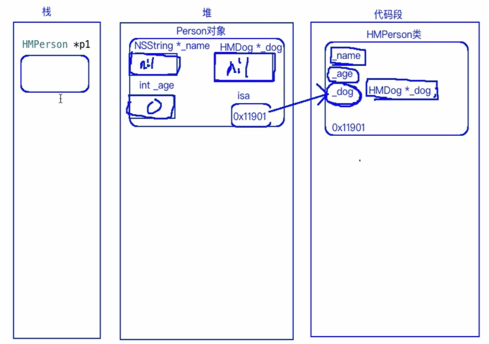

分组导航标记
标记：
# pragma mark XXXX
分割线：
# pragma mark -
类的本质
- 类的本质是我们自定义的一个数据类型
- 类可以作为方法的参数:
- (void) test : (Dog *)Dog;
- 一个target钟的类无法直接在另外一个target钟访问；
- 类的属性代表这个类所拥有的东西；
- 类的方法代表该类所具备的行为和功能；
对象作为类的属性

- 属性的本质是变量；
- 在创建对象的时候，对象中的属性是按照类模板中个规定所创建出来的；
- 注意_dog是指针变量；如果对象的属性是另一个类的对象，这个属性仅仅是一个指针变量，并没有对象产生；

 如果要再方法中调用当前对象的另一个方法
如果要再方法中调用当前对象的另一个方法 [self 方法名]